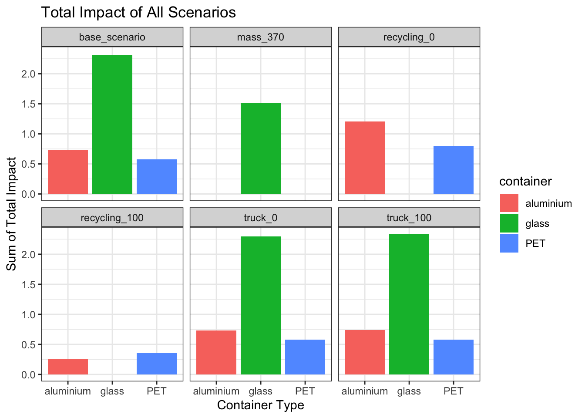
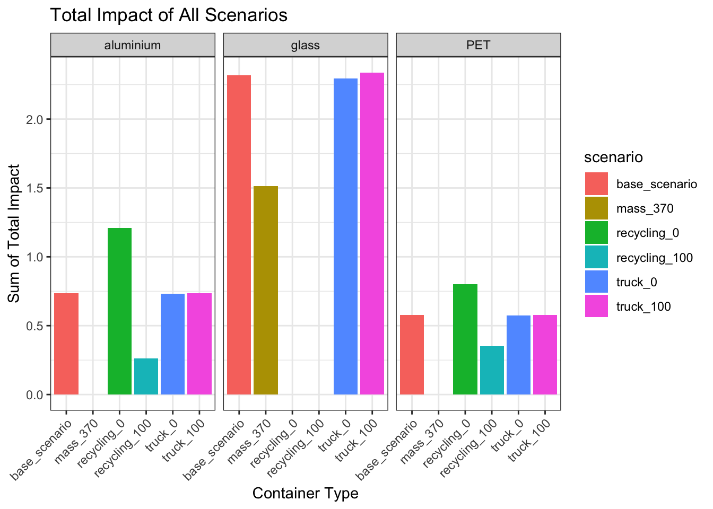
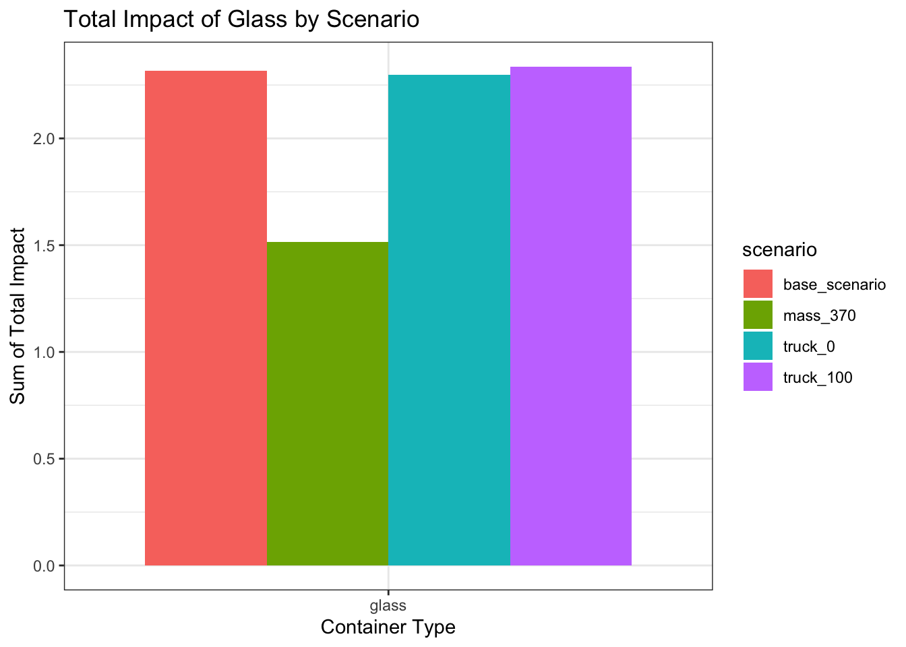
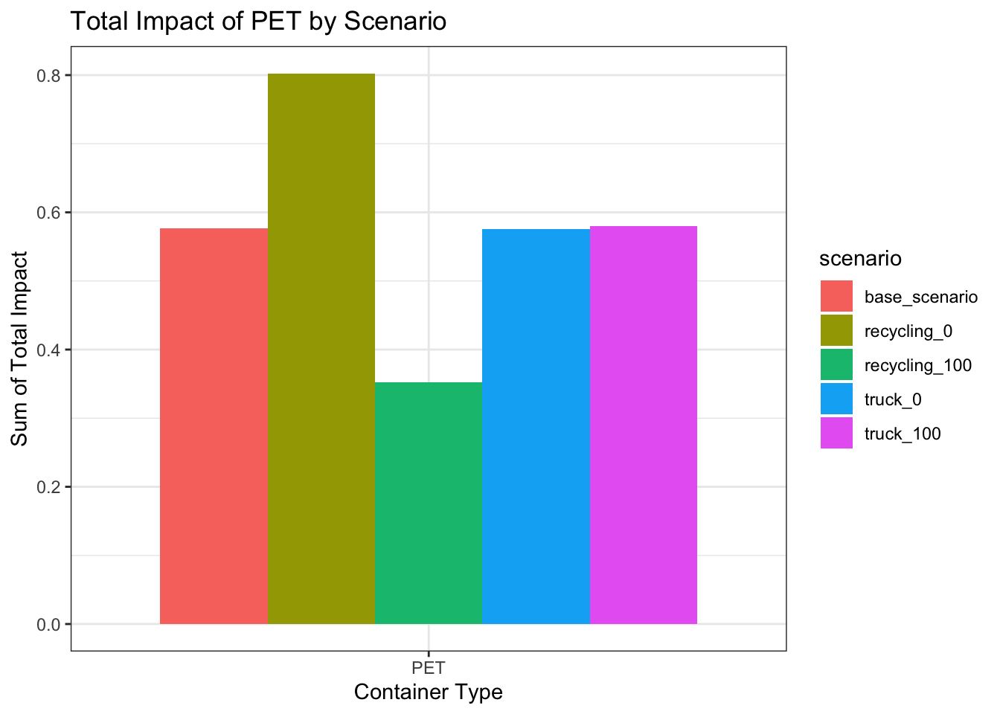
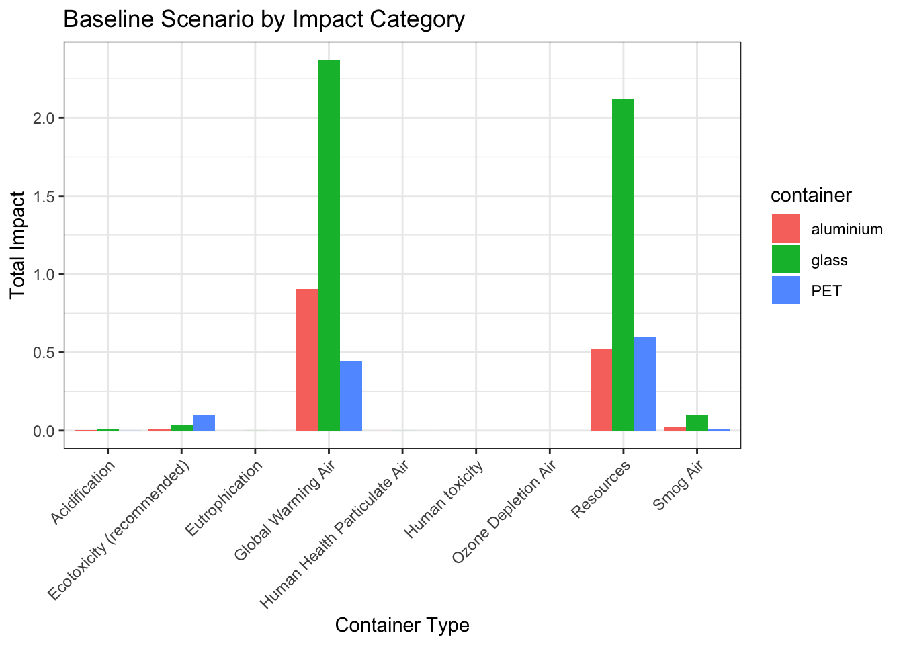
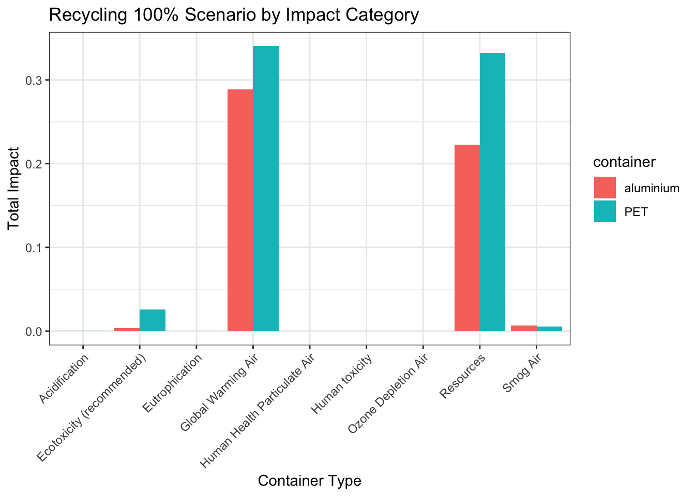
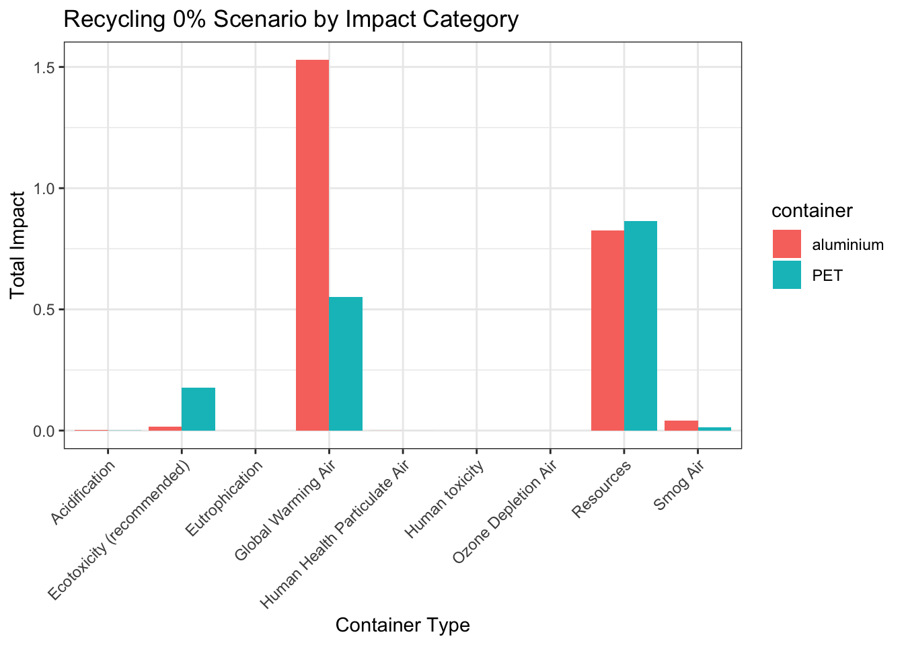
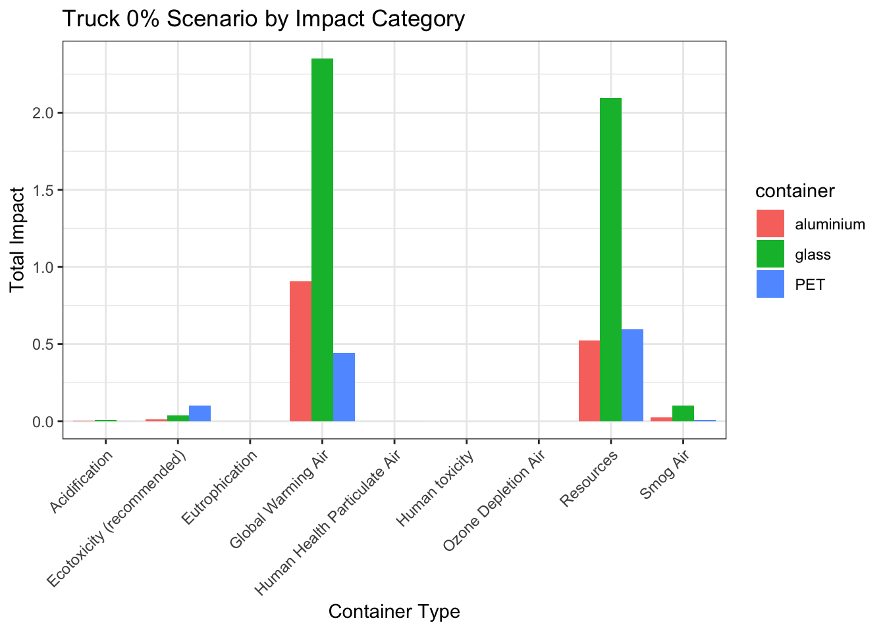
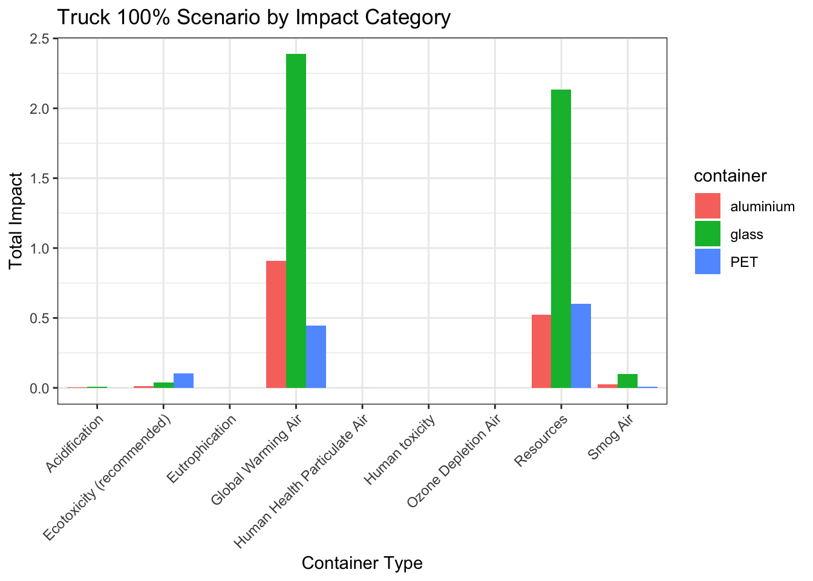

library(tidyverse)
library(here)
library(gt)ESM 273: LCA Final Analysis
containers <- read_csv(here("data/all_containers.csv"))containers %>%
group_by(container, scenario) %>%
filter(process == 'total_impact') %>%
select(container, scenario, impact_type, unit, process, value) %>%
gt() | impact_type | unit | process | value |
|---|---|---|---|
| aluminium - base_scenario | |||
| Acidification | kg SO2 eq. | total_impact | 9.61000e-04 |
| Ecotoxicity (recommended) | CTUe | total_impact | 5.12000e-03 |
| Eutrophication | kg N eq. | total_impact | 3.10000e-05 |
| Global Warming Air | excl. biogenic carbon | total_impact | 2.27000e-01 |
| Global Warming Air | incl. biogenic carbon | total_impact | 2.27000e-01 |
| Human Health Particulate Air | kg PM2.5 eq. | total_impact | 8.59000e-05 |
| Human toxicity | cancer (recommended) | total_impact | 9.04000e-11 |
| Human toxicity | non-canc. (recommended) | total_impact | 7.92000e-09 |
| Ozone Depletion Air | kg CFC 11 eq. | total_impact | 3.24000e-12 |
| Resources | Fossil fuels | total_impact | 2.62000e-01 |
| Smog Air | kg O3 eq. | total_impact | 1.18299e-02 |
| aluminium - truck_0 | |||
| Acidification | kg SO2 eq. | total_impact | 9.61000e-04 |
| Ecotoxicity (recommended) | CTUe | total_impact | 5.08000e-03 |
| Eutrophication | kg N eq. | total_impact | 3.10000e-05 |
| Global Warming Air | excl. biogenic carbon | total_impact | 2.27000e-01 |
| Global Warming Air | incl. biogenic carbon | total_impact | 2.27000e-01 |
| Human Health Particulate Air | kg PM2.5 eq. | total_impact | 8.59000e-05 |
| Human toxicity | cancer (recommended) | total_impact | 9.02000e-11 |
| Human toxicity | non-canc. (recommended) | total_impact | 7.91000e-09 |
| Ozone Depletion Air | kg CFC 11 eq. | total_impact | 3.24000e-12 |
| Resources | Fossil fuels | total_impact | 2.61000e-01 |
| Smog Air | kg O3 eq. | total_impact | 1.19000e-02 |
| aluminium - truck_100 | |||
| Acidification | kg SO2 eq. | total_impact | 9.61000e-04 |
| Ecotoxicity (recommended) | CTUe | total_impact | 5.16000e-03 |
| Eutrophication | kg N eq. | total_impact | 3.11000e-05 |
| Global Warming Air | excl. biogenic carbon | total_impact | 2.28000e-01 |
| Global Warming Air | incl. biogenic carbon | total_impact | 2.27000e-01 |
| Human Health Particulate Air | kg PM2.5 eq. | total_impact | 8.58000e-05 |
| Human toxicity | cancer (recommended) | total_impact | 9.06000e-11 |
| Human toxicity | non-canc. (recommended) | total_impact | 7.94000e-09 |
| Ozone Depletion Air | kg CFC 11 eq. | total_impact | 3.24000e-12 |
| Resources | Fossil fuels | total_impact | 2.62000e-01 |
| Smog Air | kg O3 eq. | total_impact | 1.18000e-02 |
| aluminium - recycling_0 | |||
| Acidification | kg SO2 eq. | total_impact | 1.72000e-03 |
| Ecotoxicity (recommended) | CTUe | total_impact | 8.46000e-03 |
| Eutrophication | kg N eq. | total_impact | 5.04000e-05 |
| Global Warming Air | excl. biogenic carbon | total_impact | 3.82000e-01 |
| Global Warming Air | incl. biogenic carbon | total_impact | 3.82000e-01 |
| Human Health Particulate Air | kg PM2.5 eq. | total_impact | 1.59000e-04 |
| Human toxicity | cancer (recommended) | total_impact | 1.60000e-10 |
| Human toxicity | non-canc. (recommended) | total_impact | 1.46000e-08 |
| Ozone Depletion Air | kg CFC 11 eq. | total_impact | 5.52000e-12 |
| Resources | Fossil fuels | total_impact | 4.13000e-01 |
| Smog Air | kg O3 eq. | total_impact | 2.02000e-02 |
| aluminium - recycling_100 | |||
| Acidification | kg SO2 eq. | total_impact | 2.02000e-04 |
| Ecotoxicity (recommended) | CTUe | total_impact | 1.79000e-03 |
| Eutrophication | kg N eq. | total_impact | 1.16000e-05 |
| Global Warming Air | excl. biogenic carbon | total_impact | 7.24000e-02 |
| Global Warming Air | incl. biogenic carbon | total_impact | 7.19000e-02 |
| Human Health Particulate Air | kg PM2.5 eq. | total_impact | 1.31000e-05 |
| Human toxicity | cancer (recommended) | total_impact | 2.10000e-11 |
| Human toxicity | non-canc. (recommended) | total_impact | 1.22000e-09 |
| Ozone Depletion Air | kg CFC 11 eq. | total_impact | 9.66000e-13 |
| Resources | Fossil fuels | total_impact | 1.11000e-01 |
| Smog Air | kg O3 eq. | total_impact | 3.48000e-03 |
| glass - base_scenario | |||
| Acidification | kg SO2 eq. | total_impact | 3.27000e-03 |
| Ecotoxicity (recommended) | CTUe | total_impact | 1.87000e-02 |
| Eutrophication | kg N eq. | total_impact | 1.76000e-04 |
| Global Warming Air | excl. biogenic carbon | total_impact | 5.93000e-01 |
| Global Warming Air | incl. biogenic carbon | total_impact | 5.92000e-01 |
| Human Health Particulate Air | kg PM2.5 eq. | total_impact | 1.27000e-04 |
| Human toxicity | cancer (recommended) | total_impact | 3.00000e-10 |
| Human toxicity | non-canc. (recommended) | total_impact | 3.17000e-08 |
| Ozone Depletion Air | kg CFC 11 eq. | total_impact | 2.12000e-15 |
| Resources | Fossil fuels | total_impact | 1.06000e+00 |
| Smog Air | kg O3 eq. | total_impact | 4.95000e-02 |
| glass - truck_0 | |||
| Acidification | kg SO2 eq. | total_impact | 3.27000e-03 |
| Ecotoxicity (recommended) | CTUe | total_impact | 1.81000e-02 |
| Eutrophication | kg N eq. | total_impact | 1.75000e-04 |
| Global Warming Air | excl. biogenic carbon | total_impact | 5.88000e-01 |
| Global Warming Air | incl. biogenic carbon | total_impact | 5.87000e-01 |
| Human Health Particulate Air | kg PM2.5 eq. | total_impact | 1.28000e-04 |
| Human toxicity | cancer (recommended) | total_impact | 2.97000e-10 |
| Human toxicity | non-canc. (recommended) | total_impact | 3.15000e-08 |
| Ozone Depletion Air | kg CFC 11 eq. | total_impact | 2.12000e-15 |
| Resources | Fossil fuels | total_impact | 1.05000e+00 |
| Smog Air | kg O3 eq. | total_impact | 4.99000e-02 |
| glass - truck_100 | |||
| Acidification | kg SO2 eq. | total_impact | 3.27000e-03 |
| Ecotoxicity (recommended) | CTUe | total_impact | 1.94000e-02 |
| Eutrophication | kg N eq. | total_impact | 1.77000e-04 |
| Global Warming Air | excl. biogenic carbon | total_impact | 5.97000e-01 |
| Global Warming Air | incl. biogenic carbon | total_impact | 5.97000e-01 |
| Human Health Particulate Air | kg PM2.5 eq. | total_impact | 1.27000e-04 |
| Human toxicity | cancer (recommended) | total_impact | 3.03000e-10 |
| Human toxicity | non-canc. (recommended) | total_impact | 3.19000e-08 |
| Ozone Depletion Air | kg CFC 11 eq. | total_impact | 2.12000e-15 |
| Resources | Fossil fuels | total_impact | 1.07000e+00 |
| Smog Air | kg O3 eq. | total_impact | 4.92000e-02 |
| glass - mass_370 | |||
| Acidification | kg SO2 eq. | total_impact | 2.14000e-03 |
| Ecotoxicity (recommended) | CTUe | total_impact | 1.26000e-02 |
| Eutrophication | kg N eq. | total_impact | 1.15000e-04 |
| Global Warming Air | excl. biogenic carbon | total_impact | 3.90000e-01 |
| Global Warming Air | incl. biogenic carbon | total_impact | 3.90000e-01 |
| Human Health Particulate Air | kg PM2.5 eq. | total_impact | 8.40000e-05 |
| Human toxicity | cancer (recommended) | total_impact | 1.96000e-10 |
| Human toxicity | non-canc. (recommended) | total_impact | 2.08000e-08 |
| Ozone Depletion Air | kg CFC 11 eq. | total_impact | 1.38000e-15 |
| Resources | Fossil fuels | total_impact | 6.88000e-01 |
| Smog Air | kg O3 eq. | total_impact | 3.24000e-02 |
| PET - base_scenario | |||
| Acidification | kg SO2 eq. | total_impact | 2.99000e-04 |
| Ecotoxicity (recommended) | CTUe | total_impact | 5.08000e-02 |
| Eutrophication | kg N eq. | total_impact | 5.58000e-05 |
| Global Warming Air | excl. biogenic carbon | total_impact | 1.11000e-01 |
| Global Warming Air | incl. biogenic carbon | total_impact | 1.11000e-01 |
| Human Health Particulate Air | kg PM2.5 eq. | total_impact | 1.61000e-05 |
| Human toxicity | cancer (recommended) | total_impact | 1.41000e-10 |
| Human toxicity | non-canc. (recommended) | total_impact | 5.21000e-09 |
| Ozone Depletion Air | kg CFC 11 eq. | total_impact | 3.31000e-07 |
| Resources | Fossil fuels | total_impact | 2.99000e-01 |
| Smog Air | kg O3 eq. | total_impact | 4.43000e-03 |
| PET - truck_0 | |||
| Acidification | kg SO2 eq. | total_impact | 2.99000e-04 |
| Ecotoxicity (recommended) | CTUe | total_impact | 5.08000e-02 |
| Eutrophication | kg N eq. | total_impact | 5.58000e-05 |
| Global Warming Air | excl. biogenic carbon | total_impact | 1.11000e-01 |
| Global Warming Air | incl. biogenic carbon | total_impact | 1.11000e-01 |
| Human Health Particulate Air | kg PM2.5 eq. | total_impact | 1.62000e-05 |
| Human toxicity | cancer (recommended) | total_impact | 1.40000e-10 |
| Human toxicity | non-canc. (recommended) | total_impact | 5.19000e-09 |
| Ozone Depletion Air | kg CFC 11 eq. | total_impact | 3.31000e-07 |
| Resources | Fossil fuels | total_impact | 2.98000e-01 |
| Smog Air | kg O3 eq. | total_impact | 4.46000e-03 |
| PET - truck_100 | |||
| Acidification | kg SO2 eq. | total_impact | 2.99000e-04 |
| Ecotoxicity (recommended) | CTUe | total_impact | 5.09000e-02 |
| Eutrophication | kg N eq. | total_impact | 5.59000e-05 |
| Global Warming Air | excl. biogenic carbon | total_impact | 1.12000e-01 |
| Global Warming Air | incl. biogenic carbon | total_impact | 1.12000e-01 |
| Human Health Particulate Air | kg PM2.5 eq. | total_impact | 1.61000e-05 |
| Human toxicity | cancer (recommended) | total_impact | 1.41000e-10 |
| Human toxicity | non-canc. (recommended) | total_impact | 5.22000e-09 |
| Ozone Depletion Air | kg CFC 11 eq. | total_impact | 3.31000e-07 |
| Resources | Fossil fuels | total_impact | 3.00000e-01 |
| Smog Air | kg O3 eq. | total_impact | 4.41000e-03 |
| PET - recycling_0 | |||
| Acidification | kg SO2 eq. | total_impact | 4.26000e-04 |
| Ecotoxicity (recommended) | CTUe | total_impact | 8.86000e-02 |
| Eutrophication | kg N eq. | total_impact | 4.58000e-05 |
| Global Warming Air | excl. biogenic carbon | total_impact | 1.38000e-01 |
| Global Warming Air | incl. biogenic carbon | total_impact | 1.37000e-01 |
| Human Health Particulate Air | kg PM2.5 eq. | total_impact | 2.23000e-05 |
| Human toxicity | cancer (recommended) | total_impact | 2.36000e-10 |
| Human toxicity | non-canc. (recommended) | total_impact | 8.19000e-09 |
| Ozone Depletion Air | kg CFC 11 eq. | total_impact | 5.89000e-07 |
| Resources | Fossil fuels | total_impact | 4.32000e-01 |
| Smog Air | kg O3 eq. | total_impact | 6.23000e-03 |
| PET - recycling_100 | |||
| Acidification | kg SO2 eq. | total_impact | 1.72000e-04 |
| Ecotoxicity (recommended) | CTUe | total_impact | 1.30000e-02 |
| Eutrophication | kg N eq. | total_impact | 6.58000e-05 |
| Global Warming Air | excl. biogenic carbon | total_impact | 8.51000e-02 |
| Global Warming Air | incl. biogenic carbon | total_impact | 8.51000e-02 |
| Human Health Particulate Air | kg PM2.5 eq. | total_impact | 9.93000e-06 |
| Human toxicity | cancer (recommended) | total_impact | 4.48000e-11 |
| Human toxicity | non-canc. (recommended) | total_impact | 2.22000e-09 |
| Ozone Depletion Air | kg CFC 11 eq. | total_impact | 7.34000e-08 |
| Resources | Fossil fuels | total_impact | 1.66000e-01 |
| Smog Air | kg O3 eq. | total_impact | 2.64000e-03 |
containers %>%
group_by(container, scenario) %>%
filter(process == 'total_impact') %>%
summarize(sum_total_impact = sum(value, na.rm = TRUE)) %>%
ggplot(aes(x = container, y = sum_total_impact, fill = container)) +
geom_col(position = "dodge") +
facet_wrap(~scenario) +
labs(y = "Sum of Total Impact",
x = "Container Type",
title = "Total Impact of All Scenarios") +
theme_bw()
containers %>%
group_by(container, scenario) %>%
filter(process == 'total_impact') %>%
summarize(sum_total_impact = sum(value, na.rm = TRUE)) %>%
ggplot(aes(x = scenario, y = sum_total_impact, fill = scenario)) +
geom_col(position = "dodge") +
facet_wrap(~container) +
labs(y = "Sum of Total Impact",
x = "Container Type",
title = "Total Impact of All Scenarios") +
theme_bw() +
theme(axis.text.x = element_text(angle = 45, hjust = 1))
containers %>%
group_by(container, scenario) %>%
filter(process == 'total_impact',
container == 'glass') %>%
summarize(sum_total_impact = sum(value, na.rm = TRUE)) %>%
ggplot(aes(x = container, y = sum_total_impact, fill = scenario)) +
geom_col(position = "dodge") +
labs(y = "Sum of Total Impact",
x = "Container Type",
title = "Total Impact of Glass by Scenario") +
theme_bw()
containers %>%
group_by(container, scenario) %>%
filter(process == 'total_impact',
container == 'PET') %>%
summarize(sum_total_impact = sum(value, na.rm = TRUE)) %>%
ggplot(aes(x = container, y = sum_total_impact, fill = scenario)) +
geom_col(position = "dodge") +
labs(y = "Sum of Total Impact",
x = "Container Type",
title = "Total Impact of PET by Scenario") +
theme_bw()
containers %>%
group_by(container, scenario) %>%
filter(process == 'total_impact',
container == 'aluminium') %>%
summarize(sum_total_impact = sum(value, na.rm = TRUE)) %>%
ggplot(aes(x = container, y = sum_total_impact, fill = scenario)) +
geom_col(position = "dodge") +
labs(y = "Sum of Total Impact",
x = "Container Type",
title = "Total Impact of Aluminium by Scenario") +
theme_bw()
containers %>%
filter(scenario == "base_scenario") %>%
group_by(impact_type, container) %>%
summarize(sum_total_impact = sum(value, na.rm = TRUE)) %>%
ggplot(aes(x = impact_type, y = sum_total_impact, fill = container)) +
geom_col(position = "dodge") +
labs(y = "Total Impact",
x = "Container Type",
title = "Baseline Scenario by Impact Category") +
theme_bw() +
theme(axis.text.x = element_text(angle = 45, hjust = 1))
containers %>%
filter(scenario == "recycling_100") %>%
group_by(impact_type, container) %>%
summarize(sum_total_impact = sum(value, na.rm = TRUE)) %>%
ggplot(aes(x = impact_type, y = sum_total_impact, fill = container)) +
geom_col(position = "dodge") +
labs(y = "Total Impact",
x = "Container Type",
title = "Recycling 100% Scenario by Impact Category") +
theme_bw() +
theme(axis.text.x = element_text(angle = 45, hjust = 1))
containers %>%
filter(scenario == "recycling_0") %>%
group_by(impact_type, container) %>%
summarize(sum_total_impact = sum(value, na.rm = TRUE)) %>%
ggplot(aes(x = impact_type, y = sum_total_impact, fill = container)) +
geom_col(position = "dodge") +
labs(y = "Total Impact",
x = "Container Type",
title = "Recycling 0% Scenario by Impact Category") +
theme_bw() +
theme(axis.text.x = element_text(angle = 45, hjust = 1))
containers %>%
filter(scenario == "truck_0") %>%
group_by(impact_type, container) %>%
summarize(sum_total_impact = sum(value, na.rm = TRUE)) %>%
ggplot(aes(x = impact_type, y = sum_total_impact, fill = container)) +
geom_col(position = "dodge") +
labs(y = "Total Impact",
x = "Container Type",
title = "Truck 0% Scenario by Impact Category") +
theme_bw() +
theme(axis.text.x = element_text(angle = 45, hjust = 1))
containers %>%
filter(scenario == "truck_100") %>%
group_by(impact_type, container) %>%
summarize(sum_total_impact = sum(value, na.rm = TRUE)) %>%
ggplot(aes(x = impact_type, y = sum_total_impact, fill = container)) +
geom_col(position = "dodge") +
labs(y = "Total Impact",
x = "Container Type",
title = "Truck 100% Scenario by Impact Category") +
theme_bw() +
theme(axis.text.x = element_text(angle = 45, hjust = 1))
containers %>%
filter(scenario == "base_scenario") %>%
group_by(impact_type, container) %>%
gt()| scenario | impact_method | unit | process | value | life_cycle |
|---|---|---|---|---|---|
| Acidification - aluminium | |||||
| base_scenario | TRACI 2.1 | kg SO2 eq. | total_impact | 9.61000e-04 | total_impact |
| base_scenario | TRACI 2.1 | kg SO2 eq. | eu_28_ferro_metals_on_landfill_ts | 2.58000e-06 | end-of-life |
| base_scenario | TRACI 2.1 | kg SO2 eq. | eu28_efta_primary_aluminium_ingot_consumption_mix_2015_european_aluminium | 2.54000e-03 | production |
| base_scenario | TRACI 2.1 | kg SO2 eq. | eu28_efta_primary_aluminium_ingot_consumption_mix_2015_european_aluminium_2 | -1.70000e-03 | end-of-life |
| base_scenario | TRACI 2.1 | kg SO2 eq. | eu28_efta_turkey_aluminium_remelting_wrought_alloys_ingot_from_scrap_2015_european_aluminium_p_agg | 3.11000e-05 | end-of-life |
| base_scenario | TRACI 2.1 | kg SO2 eq. | eu28_efta_turkey_aluminium_sheet_2015_european_aluminium_p_agg | 5.77000e-05 | production |
| base_scenario | TRACI 2.1 | kg SO2 eq. | glo_rail_transport_cargo_diesel_average_train_gross_tonne_weight_1_000t_726t_payload_capacity_ts_u_so | 1.39000e-06 | transportation |
| base_scenario | TRACI 2.1 | kg SO2 eq. | glo_truck_euro_5_20_26t_gross_weight_17_3t_payload_capacity_ts_u_so | 1.12000e-06 | NA |
| base_scenario | TRACI 2.1 | kg SO2 eq. | glo_truck_euro_5_20_26t_gross_weight_17_3t_payload_capacity_ts_u_so_2 | 1.12000e-06 | transportation |
| base_scenario | TRACI 2.1 | kg SO2 eq. | glo_truck_euro_5_28_32t_gross_weight_22t_payload_capacity_ts_u_so | 9.94000e-06 | transportation |
| base_scenario | TRACI 2.1 | kg SO2 eq. | us_diesel_mix_at_refinery_ts | 2.28000e-06 | transportation |
| base_scenario | TRACI 2.1 | kg SO2 eq. | us_electricity_grid_mix_ts | 9.82000e-06 | production |
| Ecotoxicity (recommended) - aluminium | |||||
| base_scenario | TRACI 2.1 | CTUe | total_impact | 5.12000e-03 | total_impact |
| base_scenario | TRACI 2.1 | CTUe | eu_28_ferro_metals_on_landfill_ts | 3.47000e-05 | end-of-life |
| base_scenario | TRACI 2.1 | CTUe | eu28_efta_primary_aluminium_ingot_consumption_mix_2015_european_aluminium | 1.13000e-02 | production |
| base_scenario | TRACI 2.1 | CTUe | eu28_efta_primary_aluminium_ingot_consumption_mix_2015_european_aluminium_2 | -7.53000e-03 | end-of-life |
| base_scenario | TRACI 2.1 | CTUe | eu28_efta_turkey_aluminium_remelting_wrought_alloys_ingot_from_scrap_2015_european_aluminium_p_agg | 1.30000e-04 | end-of-life |
| base_scenario | TRACI 2.1 | CTUe | eu28_efta_turkey_aluminium_sheet_2015_european_aluminium_p_agg | 3.80000e-04 | production |
| base_scenario | TRACI 2.1 | CTUe | glo_rail_transport_cargo_diesel_average_train_gross_tonne_weight_1_000t_726t_payload_capacity_ts_u_so | NA | transportation |
| base_scenario | TRACI 2.1 | CTUe | glo_truck_euro_5_20_26t_gross_weight_17_3t_payload_capacity_ts_u_so | 1.21000e-11 | NA |
| base_scenario | TRACI 2.1 | CTUe | glo_truck_euro_5_20_26t_gross_weight_17_3t_payload_capacity_ts_u_so_2 | 1.21000e-11 | transportation |
| base_scenario | TRACI 2.1 | CTUe | glo_truck_euro_5_28_32t_gross_weight_22t_payload_capacity_ts_u_so | 1.07000e-10 | transportation |
| base_scenario | TRACI 2.1 | CTUe | us_diesel_mix_at_refinery_ts | 6.93000e-04 | transportation |
| base_scenario | TRACI 2.1 | CTUe | us_electricity_grid_mix_ts | 1.44000e-04 | production |
| Eutrophication - aluminium | |||||
| base_scenario | TRACI 2.1 | kg N eq. | total_impact | 3.10000e-05 | total_impact |
| base_scenario | TRACI 2.1 | kg N eq. | eu_28_ferro_metals_on_landfill_ts | 1.11000e-07 | end-of-life |
| base_scenario | TRACI 2.1 | kg N eq. | eu28_efta_primary_aluminium_ingot_consumption_mix_2015_european_aluminium | 6.67000e-05 | production |
| base_scenario | TRACI 2.1 | kg N eq. | eu28_efta_primary_aluminium_ingot_consumption_mix_2015_european_aluminium_2 | -4.46000e-05 | end-of-life |
| base_scenario | TRACI 2.1 | kg N eq. | eu28_efta_turkey_aluminium_remelting_wrought_alloys_ingot_from_scrap_2015_european_aluminium_p_agg | 1.76000e-06 | end-of-life |
| base_scenario | TRACI 2.1 | kg N eq. | eu28_efta_turkey_aluminium_sheet_2015_european_aluminium_p_agg | 4.46000e-06 | production |
| base_scenario | TRACI 2.1 | kg N eq. | glo_rail_transport_cargo_diesel_average_train_gross_tonne_weight_1_000t_726t_payload_capacity_ts_u_so | 8.78000e-08 | transportation |
| base_scenario | TRACI 2.1 | kg N eq. | glo_truck_euro_5_20_26t_gross_weight_17_3t_payload_capacity_ts_u_so | 7.19000e-08 | NA |
| base_scenario | TRACI 2.1 | kg N eq. | glo_truck_euro_5_20_26t_gross_weight_17_3t_payload_capacity_ts_u_so_2 | 7.19000e-08 | transportation |
| base_scenario | TRACI 2.1 | kg N eq. | glo_truck_euro_5_28_32t_gross_weight_22t_payload_capacity_ts_u_so | 6.35000e-07 | transportation |
| base_scenario | TRACI 2.1 | kg N eq. | us_diesel_mix_at_refinery_ts | 9.49000e-07 | transportation |
| base_scenario | TRACI 2.1 | kg N eq. | us_electricity_grid_mix_ts | 7.42000e-07 | production |
| Global Warming Air - aluminium | |||||
| base_scenario | TRACI 2.1 | excl. biogenic carbon | total_impact | 2.27000e-01 | total_impact |
| base_scenario | TRACI 2.1 | excl. biogenic carbon | eu_28_ferro_metals_on_landfill_ts | 8.87000e-04 | end-of-life |
| base_scenario | TRACI 2.1 | excl. biogenic carbon | eu28_efta_primary_aluminium_ingot_consumption_mix_2015_european_aluminium | 5.29000e-01 | production |
| base_scenario | TRACI 2.1 | excl. biogenic carbon | eu28_efta_primary_aluminium_ingot_consumption_mix_2015_european_aluminium_2 | -3.54000e-01 | end-of-life |
| base_scenario | TRACI 2.1 | excl. biogenic carbon | eu28_efta_turkey_aluminium_remelting_wrought_alloys_ingot_from_scrap_2015_european_aluminium_p_agg | 1.35000e-02 | end-of-life |
| base_scenario | TRACI 2.1 | excl. biogenic carbon | eu28_efta_turkey_aluminium_sheet_2015_european_aluminium_p_agg | 2.58000e-02 | production |
| base_scenario | TRACI 2.1 | excl. biogenic carbon | glo_rail_transport_cargo_diesel_average_train_gross_tonne_weight_1_000t_726t_payload_capacity_ts_u_so | 1.33000e-04 | transportation |
| base_scenario | TRACI 2.1 | excl. biogenic carbon | glo_truck_euro_5_20_26t_gross_weight_17_3t_payload_capacity_ts_u_so | 4.00000e-04 | NA |
| base_scenario | TRACI 2.1 | excl. biogenic carbon | glo_truck_euro_5_20_26t_gross_weight_17_3t_payload_capacity_ts_u_so_2 | 4.00000e-04 | transportation |
| base_scenario | TRACI 2.1 | excl. biogenic carbon | glo_truck_euro_5_28_32t_gross_weight_22t_payload_capacity_ts_u_so | 3.41000e-03 | transportation |
| base_scenario | TRACI 2.1 | excl. biogenic carbon | us_diesel_mix_at_refinery_ts | 7.65000e-04 | transportation |
| base_scenario | TRACI 2.1 | excl. biogenic carbon | us_electricity_grid_mix_ts | 6.45000e-03 | production |
| base_scenario | TRACI 2.1 | incl. biogenic carbon | total_impact | 2.27000e-01 | total_impact |
| base_scenario | TRACI 2.1 | incl. biogenic carbon | eu_28_ferro_metals_on_landfill_ts | 8.57000e-04 | end-of-life |
| base_scenario | TRACI 2.1 | incl. biogenic carbon | eu28_efta_primary_aluminium_ingot_consumption_mix_2015_european_aluminium | 5.30000e-01 | production |
| base_scenario | TRACI 2.1 | incl. biogenic carbon | eu28_efta_primary_aluminium_ingot_consumption_mix_2015_european_aluminium_2 | -3.54000e-01 | end-of-life |
| base_scenario | TRACI 2.1 | incl. biogenic carbon | eu28_efta_turkey_aluminium_remelting_wrought_alloys_ingot_from_scrap_2015_european_aluminium_p_agg | 1.35000e-02 | end-of-life |
| base_scenario | TRACI 2.1 | incl. biogenic carbon | eu28_efta_turkey_aluminium_sheet_2015_european_aluminium_p_agg | 2.53000e-02 | production |
| base_scenario | TRACI 2.1 | incl. biogenic carbon | glo_rail_transport_cargo_diesel_average_train_gross_tonne_weight_1_000t_726t_payload_capacity_ts_u_so | 1.40000e-04 | transportation |
| base_scenario | TRACI 2.1 | incl. biogenic carbon | glo_truck_euro_5_20_26t_gross_weight_17_3t_payload_capacity_ts_u_so | 4.20000e-04 | NA |
| base_scenario | TRACI 2.1 | incl. biogenic carbon | glo_truck_euro_5_20_26t_gross_weight_17_3t_payload_capacity_ts_u_so_2 | 4.20000e-04 | transportation |
| base_scenario | TRACI 2.1 | incl. biogenic carbon | glo_truck_euro_5_28_32t_gross_weight_22t_payload_capacity_ts_u_so | 3.59000e-03 | transportation |
| base_scenario | TRACI 2.1 | incl. biogenic carbon | us_diesel_mix_at_refinery_ts | 5.64000e-04 | transportation |
| base_scenario | TRACI 2.1 | incl. biogenic carbon | us_electricity_grid_mix_ts | 6.45000e-03 | production |
| Human Health Particulate Air - aluminium | |||||
| base_scenario | TRACI 2.1 | kg PM2.5 eq. | total_impact | 8.59000e-05 | total_impact |
| base_scenario | TRACI 2.1 | kg PM2.5 eq. | eu_28_ferro_metals_on_landfill_ts | 1.94000e-07 | end-of-life |
| base_scenario | TRACI 2.1 | kg PM2.5 eq. | eu28_efta_primary_aluminium_ingot_consumption_mix_2015_european_aluminium | 2.41000e-04 | production |
| base_scenario | TRACI 2.1 | kg PM2.5 eq. | eu28_efta_primary_aluminium_ingot_consumption_mix_2015_european_aluminium_2 | -1.61000e-04 | end-of-life |
| base_scenario | TRACI 2.1 | kg PM2.5 eq. | eu28_efta_turkey_aluminium_remelting_wrought_alloys_ingot_from_scrap_2015_european_aluminium_p_agg | 1.29000e-06 | end-of-life |
| base_scenario | TRACI 2.1 | kg PM2.5 eq. | eu28_efta_turkey_aluminium_sheet_2015_european_aluminium_p_agg | 3.34000e-06 | production |
| base_scenario | TRACI 2.1 | kg PM2.5 eq. | glo_rail_transport_cargo_diesel_average_train_gross_tonne_weight_1_000t_726t_payload_capacity_ts_u_so | 6.68000e-08 | transportation |
| base_scenario | TRACI 2.1 | kg PM2.5 eq. | glo_truck_euro_5_20_26t_gross_weight_17_3t_payload_capacity_ts_u_so | 2.04000e-08 | NA |
| base_scenario | TRACI 2.1 | kg PM2.5 eq. | glo_truck_euro_5_20_26t_gross_weight_17_3t_payload_capacity_ts_u_so_2 | 2.04000e-08 | transportation |
| base_scenario | TRACI 2.1 | kg PM2.5 eq. | glo_truck_euro_5_28_32t_gross_weight_22t_payload_capacity_ts_u_so | 1.67000e-07 | transportation |
| base_scenario | TRACI 2.1 | kg PM2.5 eq. | us_diesel_mix_at_refinery_ts | 1.07000e-07 | transportation |
| base_scenario | TRACI 2.1 | kg PM2.5 eq. | us_electricity_grid_mix_ts | 6.48000e-07 | production |
| Human toxicity - aluminium | |||||
| base_scenario | TRACI 2.1 | cancer (recommended) | total_impact | 9.04000e-11 | total_impact |
| base_scenario | TRACI 2.1 | cancer (recommended) | eu_28_ferro_metals_on_landfill_ts | 2.52000e-12 | end-of-life |
| base_scenario | TRACI 2.1 | cancer (recommended) | eu28_efta_primary_aluminium_ingot_consumption_mix_2015_european_aluminium | 2.24000e-10 | production |
| base_scenario | TRACI 2.1 | cancer (recommended) | eu28_efta_primary_aluminium_ingot_consumption_mix_2015_european_aluminium_2 | -1.50000e-10 | end-of-life |
| base_scenario | TRACI 2.1 | cancer (recommended) | eu28_efta_turkey_aluminium_remelting_wrought_alloys_ingot_from_scrap_2015_european_aluminium_p_agg | 2.04000e-12 | end-of-life |
| base_scenario | TRACI 2.1 | cancer (recommended) | eu28_efta_turkey_aluminium_sheet_2015_european_aluminium_p_agg | 6.75000e-12 | production |
| base_scenario | TRACI 2.1 | cancer (recommended) | glo_rail_transport_cargo_diesel_average_train_gross_tonne_weight_1_000t_726t_payload_capacity_ts_u_so | NA | transportation |
| base_scenario | TRACI 2.1 | cancer (recommended) | glo_truck_euro_5_20_26t_gross_weight_17_3t_payload_capacity_ts_u_so | 5.62000e-17 | NA |
| base_scenario | TRACI 2.1 | cancer (recommended) | glo_truck_euro_5_20_26t_gross_weight_17_3t_payload_capacity_ts_u_so_2 | 5.62000e-17 | transportation |
| base_scenario | TRACI 2.1 | cancer (recommended) | glo_truck_euro_5_28_32t_gross_weight_22t_payload_capacity_ts_u_so | 4.95000e-16 | transportation |
| base_scenario | TRACI 2.1 | cancer (recommended) | us_diesel_mix_at_refinery_ts | 3.13000e-12 | transportation |
| base_scenario | TRACI 2.1 | cancer (recommended) | us_electricity_grid_mix_ts | 1.48000e-12 | production |
| base_scenario | TRACI 2.1 | non-canc. (recommended) | total_impact | 7.92000e-09 | total_impact |
| base_scenario | TRACI 2.1 | non-canc. (recommended) | eu_28_ferro_metals_on_landfill_ts | 2.92000e-10 | end-of-life |
| base_scenario | TRACI 2.1 | non-canc. (recommended) | eu28_efta_primary_aluminium_ingot_consumption_mix_2015_european_aluminium | 2.12000e-08 | production |
| base_scenario | TRACI 2.1 | non-canc. (recommended) | eu28_efta_primary_aluminium_ingot_consumption_mix_2015_european_aluminium_2 | -1.42000e-08 | end-of-life |
| base_scenario | TRACI 2.1 | non-canc. (recommended) | eu28_efta_turkey_aluminium_remelting_wrought_alloys_ingot_from_scrap_2015_european_aluminium_p_agg | 4.11000e-11 | end-of-life |
| base_scenario | TRACI 2.1 | non-canc. (recommended) | eu28_efta_turkey_aluminium_sheet_2015_european_aluminium_p_agg | 1.62000e-10 | production |
| base_scenario | TRACI 2.1 | non-canc. (recommended) | glo_rail_transport_cargo_diesel_average_train_gross_tonne_weight_1_000t_726t_payload_capacity_ts_u_so | NA | transportation |
| base_scenario | TRACI 2.1 | non-canc. (recommended) | glo_truck_euro_5_20_26t_gross_weight_17_3t_payload_capacity_ts_u_so | 1.42000e-17 | NA |
| base_scenario | TRACI 2.1 | non-canc. (recommended) | glo_truck_euro_5_20_26t_gross_weight_17_3t_payload_capacity_ts_u_so_2 | 1.42000e-17 | transportation |
| base_scenario | TRACI 2.1 | non-canc. (recommended) | glo_truck_euro_5_28_32t_gross_weight_22t_payload_capacity_ts_u_so | 1.25000e-16 | transportation |
| base_scenario | TRACI 2.1 | non-canc. (recommended) | us_diesel_mix_at_refinery_ts | 2.48000e-10 | transportation |
| base_scenario | TRACI 2.1 | non-canc. (recommended) | us_electricity_grid_mix_ts | 1.26000e-10 | production |
| Ozone Depletion Air - aluminium | |||||
| base_scenario | TRACI 2.1 | kg CFC 11 eq. | total_impact | 3.24000e-12 | total_impact |
| base_scenario | TRACI 2.1 | kg CFC 11 eq. | eu_28_ferro_metals_on_landfill_ts | 2.77000e-18 | end-of-life |
| base_scenario | TRACI 2.1 | kg CFC 11 eq. | eu28_efta_primary_aluminium_ingot_consumption_mix_2015_european_aluminium | 7.73000e-12 | production |
| base_scenario | TRACI 2.1 | kg CFC 11 eq. | eu28_efta_primary_aluminium_ingot_consumption_mix_2015_european_aluminium_2 | -5.17000e-12 | end-of-life |
| base_scenario | TRACI 2.1 | kg CFC 11 eq. | eu28_efta_turkey_aluminium_remelting_wrought_alloys_ingot_from_scrap_2015_european_aluminium_p_agg | 1.53000e-13 | end-of-life |
| base_scenario | TRACI 2.1 | kg CFC 11 eq. | eu28_efta_turkey_aluminium_sheet_2015_european_aluminium_p_agg | 5.25000e-13 | production |
| base_scenario | TRACI 2.1 | kg CFC 11 eq. | glo_rail_transport_cargo_diesel_average_train_gross_tonne_weight_1_000t_726t_payload_capacity_ts_u_so | NA | transportation |
| base_scenario | TRACI 2.1 | kg CFC 11 eq. | glo_truck_euro_5_20_26t_gross_weight_17_3t_payload_capacity_ts_u_so | NA | NA |
| base_scenario | TRACI 2.1 | kg CFC 11 eq. | glo_truck_euro_5_20_26t_gross_weight_17_3t_payload_capacity_ts_u_so_2 | NA | transportation |
| base_scenario | TRACI 2.1 | kg CFC 11 eq. | glo_truck_euro_5_28_32t_gross_weight_22t_payload_capacity_ts_u_so | NA | transportation |
| base_scenario | TRACI 2.1 | kg CFC 11 eq. | us_diesel_mix_at_refinery_ts | 5.48000e-19 | transportation |
| base_scenario | TRACI 2.1 | kg CFC 11 eq. | us_electricity_grid_mix_ts | 3.11000e-17 | production |
| Resources - aluminium | |||||
| base_scenario | TRACI 2.1 | Fossil fuels | total_impact | 2.62000e-01 | total_impact |
| base_scenario | TRACI 2.1 | Fossil fuels | eu_28_ferro_metals_on_landfill_ts | 1.72000e-03 | end-of-life |
| base_scenario | TRACI 2.1 | Fossil fuels | eu28_efta_primary_aluminium_ingot_consumption_mix_2015_european_aluminium | 5.34000e-01 | production |
| base_scenario | TRACI 2.1 | Fossil fuels | eu28_efta_primary_aluminium_ingot_consumption_mix_2015_european_aluminium_2 | -3.56000e-01 | end-of-life |
| base_scenario | TRACI 2.1 | Fossil fuels | eu28_efta_turkey_aluminium_remelting_wrought_alloys_ingot_from_scrap_2015_european_aluminium_p_agg | 2.65000e-02 | end-of-life |
| base_scenario | TRACI 2.1 | Fossil fuels | eu28_efta_turkey_aluminium_sheet_2015_european_aluminium_p_agg | 4.00000e-02 | production |
| base_scenario | TRACI 2.1 | Fossil fuels | glo_rail_transport_cargo_diesel_average_train_gross_tonne_weight_1_000t_726t_payload_capacity_ts_u_so | NA | transportation |
| base_scenario | TRACI 2.1 | Fossil fuels | glo_truck_euro_5_20_26t_gross_weight_17_3t_payload_capacity_ts_u_so | NA | NA |
| base_scenario | TRACI 2.1 | Fossil fuels | glo_truck_euro_5_20_26t_gross_weight_17_3t_payload_capacity_ts_u_so_2 | NA | transportation |
| base_scenario | TRACI 2.1 | Fossil fuels | glo_truck_euro_5_28_32t_gross_weight_22t_payload_capacity_ts_u_so | NA | transportation |
| base_scenario | TRACI 2.1 | Fossil fuels | us_diesel_mix_at_refinery_ts | 9.70000e-03 | transportation |
| base_scenario | TRACI 2.1 | Fossil fuels | us_electricity_grid_mix_ts | 6.70000e-03 | production |
| Smog Air - aluminium | |||||
| base_scenario | TRACI 2.1 | kg O3 eq. | total_impact | 1.18299e-02 | total_impact |
| base_scenario | TRACI 2.1 | kg O3 eq. | eu_28_ferro_metals_on_landfill_ts | 4.66000e-05 | end-of-life |
| base_scenario | TRACI 2.1 | kg O3 eq. | eu28_efta_primary_aluminium_ingot_consumption_mix_2015_european_aluminium | 2.84000e-02 | production |
| base_scenario | TRACI 2.1 | kg O3 eq. | eu28_efta_primary_aluminium_ingot_consumption_mix_2015_european_aluminium_2 | -1.90000e-02 | end-of-life |
| base_scenario | TRACI 2.1 | kg O3 eq. | eu28_efta_turkey_aluminium_remelting_wrought_alloys_ingot_from_scrap_2015_european_aluminium_p_agg | 6.70000e-04 | end-of-life |
| base_scenario | TRACI 2.1 | kg O3 eq. | eu28_efta_turkey_aluminium_sheet_2015_european_aluminium_p_agg | 1.16000e-03 | production |
| base_scenario | TRACI 2.1 | kg O3 eq. | glo_rail_transport_cargo_diesel_average_train_gross_tonne_weight_1_000t_726t_payload_capacity_ts_u_so | 4.97000e-05 | transportation |
| base_scenario | TRACI 2.1 | kg O3 eq. | glo_truck_euro_5_20_26t_gross_weight_17_3t_payload_capacity_ts_u_so | 2.60000e-05 | NA |
| base_scenario | TRACI 2.1 | kg O3 eq. | glo_truck_euro_5_20_26t_gross_weight_17_3t_payload_capacity_ts_u_so_2 | 2.60000e-05 | transportation |
| base_scenario | TRACI 2.1 | kg O3 eq. | glo_truck_euro_5_28_32t_gross_weight_22t_payload_capacity_ts_u_so | 2.30000e-04 | transportation |
| base_scenario | TRACI 2.1 | kg O3 eq. | us_diesel_mix_at_refinery_ts | 4.31000e-05 | transportation |
| base_scenario | TRACI 2.1 | kg O3 eq. | us_electricity_grid_mix_ts | 1.40000e-04 | production |
| Acidification - glass | |||||
| base_scenario | TRACI 2.1 | kg SO2 eq. | total_impact | 3.27000e-03 | total_impact |
| base_scenario | TRACI 2.1 | kg SO2 eq. | eu_28_container_glass_ts_p_agg | 2.96000e-03 | production |
| base_scenario | TRACI 2.1 | kg SO2 eq. | eu_28_inert_matter_glass_on_landfill_ts | 5.38000e-05 | end-of-life |
| base_scenario | TRACI 2.1 | kg SO2 eq. | glo_rail_transport_cargo_diesel_average_train_gross_tonne_weight_1_000t_726t_payload_capacity_ts_u_so | 2.10000e-05 | transportation |
| base_scenario | TRACI 2.1 | kg SO2 eq. | glo_steel_tinplated_worldsteel | 3.66000e-05 | production |
| base_scenario | TRACI 2.1 | kg SO2 eq. | glo_truck_euro_5_20_26t_gross_weight_17_3t_payload_capacity_ts_u_so | 1.70000e-05 | NA |
| base_scenario | TRACI 2.1 | kg SO2 eq. | glo_truck_euro_5_28_32t_gross_weight_22t_payload_capacity_ts_u_so | 1.31000e-06 | transportation |
| base_scenario | TRACI 2.1 | kg SO2 eq. | glo_truck_euro_5_28_32t_gross_weight_22t_payload_capacity_ts_u_so_2 | 1.49000e-04 | transportation |
| base_scenario | TRACI 2.1 | kg SO2 eq. | us_diesel_mix_at_refinery_ts | 3.14000e-05 | transportation |
| base_scenario | TRACI 2.1 | kg SO2 eq. | us_electricity_grid_mix_ts | 2.40000e-07 | production |
| base_scenario | TRACI 2.1 | kg SO2 eq. | us_lubricants_at_refinery_ts | 1.28000e-09 | production |
| Ecotoxicity (recommended) - glass | |||||
| base_scenario | TRACI 2.1 | CTUe | total_impact | 1.87000e-02 | total_impact |
| base_scenario | TRACI 2.1 | CTUe | eu_28_container_glass_ts_p_agg | 7.36000e-03 | production |
| base_scenario | TRACI 2.1 | CTUe | eu_28_inert_matter_glass_on_landfill_ts | 6.13000e-04 | end-of-life |
| base_scenario | TRACI 2.1 | CTUe | glo_rail_transport_cargo_diesel_average_train_gross_tonne_weight_1_000t_726t_payload_capacity_ts_u_so | NA | transportation |
| base_scenario | TRACI 2.1 | CTUe | glo_steel_tinplated_worldsteel | 1.25000e-03 | production |
| base_scenario | TRACI 2.1 | CTUe | glo_truck_euro_5_20_26t_gross_weight_17_3t_payload_capacity_ts_u_so | 1.83000e-10 | NA |
| base_scenario | TRACI 2.1 | CTUe | glo_truck_euro_5_28_32t_gross_weight_22t_payload_capacity_ts_u_so | 1.40000e-11 | transportation |
| base_scenario | TRACI 2.1 | CTUe | glo_truck_euro_5_28_32t_gross_weight_22t_payload_capacity_ts_u_so_2 | 1.60000e-09 | transportation |
| base_scenario | TRACI 2.1 | CTUe | us_diesel_mix_at_refinery_ts | 9.52000e-03 | transportation |
| base_scenario | TRACI 2.1 | CTUe | us_electricity_grid_mix_ts | 3.53000e-06 | production |
| base_scenario | TRACI 2.1 | CTUe | us_lubricants_at_refinery_ts | 3.23000e-07 | production |
| Eutrophication - glass | |||||
| base_scenario | TRACI 2.1 | kg N eq. | total_impact | 1.76000e-04 | total_impact |
| base_scenario | TRACI 2.1 | kg N eq. | eu_28_container_glass_ts_p_agg | 1.46000e-04 | production |
| base_scenario | TRACI 2.1 | kg N eq. | eu_28_inert_matter_glass_on_landfill_ts | 2.32000e-06 | end-of-life |
| base_scenario | TRACI 2.1 | kg N eq. | glo_rail_transport_cargo_diesel_average_train_gross_tonne_weight_1_000t_726t_payload_capacity_ts_u_so | 1.33000e-06 | transportation |
| base_scenario | TRACI 2.1 | kg N eq. | glo_steel_tinplated_worldsteel | 2.40000e-06 | production |
| base_scenario | TRACI 2.1 | kg N eq. | glo_truck_euro_5_20_26t_gross_weight_17_3t_payload_capacity_ts_u_so | 1.09000e-06 | NA |
| base_scenario | TRACI 2.1 | kg N eq. | glo_truck_euro_5_28_32t_gross_weight_22t_payload_capacity_ts_u_so | 8.36000e-08 | transportation |
| base_scenario | TRACI 2.1 | kg N eq. | glo_truck_euro_5_28_32t_gross_weight_22t_payload_capacity_ts_u_so_2 | 9.53000e-06 | transportation |
| base_scenario | TRACI 2.1 | kg N eq. | us_diesel_mix_at_refinery_ts | 1.30000e-05 | transportation |
| base_scenario | TRACI 2.1 | kg N eq. | us_electricity_grid_mix_ts | 1.82000e-08 | production |
| base_scenario | TRACI 2.1 | kg N eq. | us_lubricants_at_refinery_ts | 1.08000e-10 | production |
| Global Warming Air - glass | |||||
| base_scenario | TRACI 2.1 | excl. biogenic carbon | total_impact | 5.93000e-01 | total_impact |
| base_scenario | TRACI 2.1 | excl. biogenic carbon | eu_28_container_glass_ts_p_agg | 4.99000e-01 | production |
| base_scenario | TRACI 2.1 | excl. biogenic carbon | eu_28_inert_matter_glass_on_landfill_ts | 8.56000e-03 | end-of-life |
| base_scenario | TRACI 2.1 | excl. biogenic carbon | glo_rail_transport_cargo_diesel_average_train_gross_tonne_weight_1_000t_726t_payload_capacity_ts_u_so | 2.01000e-03 | transportation |
| base_scenario | TRACI 2.1 | excl. biogenic carbon | glo_steel_tinplated_worldsteel | 1.49000e-02 | production |
| base_scenario | TRACI 2.1 | excl. biogenic carbon | glo_truck_euro_5_20_26t_gross_weight_17_3t_payload_capacity_ts_u_so | 6.05000e-03 | NA |
| base_scenario | TRACI 2.1 | excl. biogenic carbon | glo_truck_euro_5_28_32t_gross_weight_22t_payload_capacity_ts_u_so | 4.49000e-04 | transportation |
| base_scenario | TRACI 2.1 | excl. biogenic carbon | glo_truck_euro_5_28_32t_gross_weight_22t_payload_capacity_ts_u_so_2 | 5.12000e-02 | transportation |
| base_scenario | TRACI 2.1 | excl. biogenic carbon | us_diesel_mix_at_refinery_ts | 1.05000e-02 | transportation |
| base_scenario | TRACI 2.1 | excl. biogenic carbon | us_electricity_grid_mix_ts | 1.58000e-04 | production |
| base_scenario | TRACI 2.1 | excl. biogenic carbon | us_lubricants_at_refinery_ts | 7.36000e-07 | production |
| base_scenario | TRACI 2.1 | incl. biogenic carbon | total_impact | 5.92000e-01 | total_impact |
| base_scenario | TRACI 2.1 | incl. biogenic carbon | eu_28_container_glass_ts_p_agg | 4.98000e-01 | production |
| base_scenario | TRACI 2.1 | incl. biogenic carbon | eu_28_inert_matter_glass_on_landfill_ts | 7.84000e-03 | end-of-life |
| base_scenario | TRACI 2.1 | incl. biogenic carbon | glo_rail_transport_cargo_diesel_average_train_gross_tonne_weight_1_000t_726t_payload_capacity_ts_u_so | 2.12000e-03 | transportation |
| base_scenario | TRACI 2.1 | incl. biogenic carbon | glo_steel_tinplated_worldsteel | 1.49000e-02 | production |
| base_scenario | TRACI 2.1 | incl. biogenic carbon | glo_truck_euro_5_20_26t_gross_weight_17_3t_payload_capacity_ts_u_so | 6.36000e-03 | NA |
| base_scenario | TRACI 2.1 | incl. biogenic carbon | glo_truck_euro_5_28_32t_gross_weight_22t_payload_capacity_ts_u_so | 4.72000e-04 | transportation |
| base_scenario | TRACI 2.1 | incl. biogenic carbon | glo_truck_euro_5_28_32t_gross_weight_22t_payload_capacity_ts_u_so_2 | 5.38000e-02 | transportation |
| base_scenario | TRACI 2.1 | incl. biogenic carbon | us_diesel_mix_at_refinery_ts | 7.75000e-03 | transportation |
| base_scenario | TRACI 2.1 | incl. biogenic carbon | us_electricity_grid_mix_ts | 1.58000e-04 | production |
| base_scenario | TRACI 2.1 | incl. biogenic carbon | us_lubricants_at_refinery_ts | 7.36000e-07 | production |
| Human Health Particulate Air - glass | |||||
| base_scenario | TRACI 2.1 | kg PM2.5 eq. | total_impact | 1.27000e-04 | total_impact |
| base_scenario | TRACI 2.1 | kg PM2.5 eq. | eu_28_container_glass_ts_p_agg | 1.14000e-04 | production |
| base_scenario | TRACI 2.1 | kg PM2.5 eq. | eu_28_inert_matter_glass_on_landfill_ts | 4.49000e-06 | end-of-life |
| base_scenario | TRACI 2.1 | kg PM2.5 eq. | glo_rail_transport_cargo_diesel_average_train_gross_tonne_weight_1_000t_726t_payload_capacity_ts_u_so | 1.01000e-06 | transportation |
| base_scenario | TRACI 2.1 | kg PM2.5 eq. | glo_steel_tinplated_worldsteel | 3.78000e-06 | production |
| base_scenario | TRACI 2.1 | kg PM2.5 eq. | glo_truck_euro_5_20_26t_gross_weight_17_3t_payload_capacity_ts_u_so | 3.08000e-07 | NA |
| base_scenario | TRACI 2.1 | kg PM2.5 eq. | glo_truck_euro_5_28_32t_gross_weight_22t_payload_capacity_ts_u_so | 2.19000e-08 | transportation |
| base_scenario | TRACI 2.1 | kg PM2.5 eq. | glo_truck_euro_5_28_32t_gross_weight_22t_payload_capacity_ts_u_so_2 | 2.50000e-06 | transportation |
| base_scenario | TRACI 2.1 | kg PM2.5 eq. | us_diesel_mix_at_refinery_ts | 1.46000e-06 | transportation |
| base_scenario | TRACI 2.1 | kg PM2.5 eq. | us_electricity_grid_mix_ts | 1.59000e-08 | production |
| base_scenario | TRACI 2.1 | kg PM2.5 eq. | us_lubricants_at_refinery_ts | 5.88000e-11 | production |
| Human toxicity - glass | |||||
| base_scenario | TRACI 2.1 | cancer (recommended) | total_impact | 3.00000e-10 | total_impact |
| base_scenario | TRACI 2.1 | cancer (recommended) | eu_28_container_glass_ts_p_agg | 1.95000e-10 | production |
| base_scenario | TRACI 2.1 | cancer (recommended) | eu_28_inert_matter_glass_on_landfill_ts | 5.78000e-11 | end-of-life |
| base_scenario | TRACI 2.1 | cancer (recommended) | glo_rail_transport_cargo_diesel_average_train_gross_tonne_weight_1_000t_726t_payload_capacity_ts_u_so | NA | transportation |
| base_scenario | TRACI 2.1 | cancer (recommended) | glo_steel_tinplated_worldsteel | 3.95000e-12 | production |
| base_scenario | TRACI 2.1 | cancer (recommended) | glo_truck_euro_5_20_26t_gross_weight_17_3t_payload_capacity_ts_u_so | 8.51000e-16 | NA |
| base_scenario | TRACI 2.1 | cancer (recommended) | glo_truck_euro_5_28_32t_gross_weight_22t_payload_capacity_ts_u_so | 6.51000e-17 | transportation |
| base_scenario | TRACI 2.1 | cancer (recommended) | glo_truck_euro_5_28_32t_gross_weight_22t_payload_capacity_ts_u_so_2 | 7.42000e-15 | transportation |
| base_scenario | TRACI 2.1 | cancer (recommended) | us_diesel_mix_at_refinery_ts | 4.30000e-11 | transportation |
| base_scenario | TRACI 2.1 | cancer (recommended) | us_electricity_grid_mix_ts | 3.62000e-14 | production |
| base_scenario | TRACI 2.1 | cancer (recommended) | us_lubricants_at_refinery_ts | 1.30000e-15 | production |
| base_scenario | TRACI 2.1 | non-canc. (recommended) | total_impact | 3.17000e-08 | total_impact |
| base_scenario | TRACI 2.1 | non-canc. (recommended) | eu_28_container_glass_ts_p_agg | 2.10000e-08 | production |
| base_scenario | TRACI 2.1 | non-canc. (recommended) | eu_28_inert_matter_glass_on_landfill_ts | 6.82000e-09 | end-of-life |
| base_scenario | TRACI 2.1 | non-canc. (recommended) | glo_rail_transport_cargo_diesel_average_train_gross_tonne_weight_1_000t_726t_payload_capacity_ts_u_so | NA | transportation |
| base_scenario | TRACI 2.1 | non-canc. (recommended) | glo_steel_tinplated_worldsteel | 4.83000e-10 | production |
| base_scenario | TRACI 2.1 | non-canc. (recommended) | glo_truck_euro_5_20_26t_gross_weight_17_3t_payload_capacity_ts_u_so | 2.16000e-16 | NA |
| base_scenario | TRACI 2.1 | non-canc. (recommended) | glo_truck_euro_5_28_32t_gross_weight_22t_payload_capacity_ts_u_so | 1.65000e-17 | transportation |
| base_scenario | TRACI 2.1 | non-canc. (recommended) | glo_truck_euro_5_28_32t_gross_weight_22t_payload_capacity_ts_u_so_2 | 1.88000e-15 | transportation |
| base_scenario | TRACI 2.1 | non-canc. (recommended) | us_diesel_mix_at_refinery_ts | 3.41000e-09 | transportation |
| base_scenario | TRACI 2.1 | non-canc. (recommended) | us_electricity_grid_mix_ts | 3.09000e-12 | production |
| base_scenario | TRACI 2.1 | non-canc. (recommended) | us_lubricants_at_refinery_ts | 1.06000e-13 | production |
| Ozone Depletion Air - glass | |||||
| base_scenario | TRACI 2.1 | kg CFC 11 eq. | total_impact | 2.12000e-15 | total_impact |
| base_scenario | TRACI 2.1 | kg CFC 11 eq. | eu_28_container_glass_ts_p_agg | 2.06000e-15 | production |
| base_scenario | TRACI 2.1 | kg CFC 11 eq. | eu_28_inert_matter_glass_on_landfill_ts | 4.31000e-17 | end-of-life |
| base_scenario | TRACI 2.1 | kg CFC 11 eq. | glo_rail_transport_cargo_diesel_average_train_gross_tonne_weight_1_000t_726t_payload_capacity_ts_u_so | NA | transportation |
| base_scenario | TRACI 2.1 | kg CFC 11 eq. | glo_steel_tinplated_worldsteel | 1.16000e-17 | production |
| base_scenario | TRACI 2.1 | kg CFC 11 eq. | glo_truck_euro_5_20_26t_gross_weight_17_3t_payload_capacity_ts_u_so | NA | NA |
| base_scenario | TRACI 2.1 | kg CFC 11 eq. | glo_truck_euro_5_28_32t_gross_weight_22t_payload_capacity_ts_u_so | NA | transportation |
| base_scenario | TRACI 2.1 | kg CFC 11 eq. | glo_truck_euro_5_28_32t_gross_weight_22t_payload_capacity_ts_u_so_2 | NA | transportation |
| base_scenario | TRACI 2.1 | kg CFC 11 eq. | us_diesel_mix_at_refinery_ts | 7.52000e-18 | transportation |
| base_scenario | TRACI 2.1 | kg CFC 11 eq. | us_electricity_grid_mix_ts | 7.60000e-19 | production |
| base_scenario | TRACI 2.1 | kg CFC 11 eq. | us_lubricants_at_refinery_ts | 5.67000e-22 | production |
| Resources - glass | |||||
| base_scenario | TRACI 2.1 | Fossil fuels | total_impact | 1.06000e+00 | total_impact |
| base_scenario | TRACI 2.1 | Fossil fuels | eu_28_container_glass_ts_p_agg | 9.02000e-01 | production |
| base_scenario | TRACI 2.1 | Fossil fuels | eu_28_inert_matter_glass_on_landfill_ts | 1.42000e-02 | end-of-life |
| base_scenario | TRACI 2.1 | Fossil fuels | glo_rail_transport_cargo_diesel_average_train_gross_tonne_weight_1_000t_726t_payload_capacity_ts_u_so | NA | transportation |
| base_scenario | TRACI 2.1 | Fossil fuels | glo_steel_tinplated_worldsteel | 6.34000e-03 | production |
| base_scenario | TRACI 2.1 | Fossil fuels | glo_truck_euro_5_20_26t_gross_weight_17_3t_payload_capacity_ts_u_so | NA | NA |
| base_scenario | TRACI 2.1 | Fossil fuels | glo_truck_euro_5_28_32t_gross_weight_22t_payload_capacity_ts_u_so | NA | transportation |
| base_scenario | TRACI 2.1 | Fossil fuels | glo_truck_euro_5_28_32t_gross_weight_22t_payload_capacity_ts_u_so_2 | NA | transportation |
| base_scenario | TRACI 2.1 | Fossil fuels | us_diesel_mix_at_refinery_ts | 1.33000e-01 | transportation |
| base_scenario | TRACI 2.1 | Fossil fuels | us_electricity_grid_mix_ts | 1.64000e-04 | production |
| base_scenario | TRACI 2.1 | Fossil fuels | us_lubricants_at_refinery_ts | 4.80000e-06 | production |
| Smog Air - glass | |||||
| base_scenario | TRACI 2.1 | kg O3 eq. | total_impact | 4.95000e-02 | total_impact |
| base_scenario | TRACI 2.1 | kg O3 eq. | eu_28_container_glass_ts_p_agg | 4.27000e-02 | production |
| base_scenario | TRACI 2.1 | kg O3 eq. | eu_28_inert_matter_glass_on_landfill_ts | 1.02000e-03 | end-of-life |
| base_scenario | TRACI 2.1 | kg O3 eq. | glo_rail_transport_cargo_diesel_average_train_gross_tonne_weight_1_000t_726t_payload_capacity_ts_u_so | 7.52000e-04 | transportation |
| base_scenario | TRACI 2.1 | kg O3 eq. | glo_steel_tinplated_worldsteel | 6.04000e-04 | production |
| base_scenario | TRACI 2.1 | kg O3 eq. | glo_truck_euro_5_20_26t_gross_weight_17_3t_payload_capacity_ts_u_so | 3.94000e-04 | NA |
| base_scenario | TRACI 2.1 | kg O3 eq. | glo_truck_euro_5_28_32t_gross_weight_22t_payload_capacity_ts_u_so | 3.03000e-05 | transportation |
| base_scenario | TRACI 2.1 | kg O3 eq. | glo_truck_euro_5_28_32t_gross_weight_22t_payload_capacity_ts_u_so_2 | 3.45000e-03 | transportation |
| base_scenario | TRACI 2.1 | kg O3 eq. | us_diesel_mix_at_refinery_ts | 5.92000e-04 | transportation |
| base_scenario | TRACI 2.1 | kg O3 eq. | us_electricity_grid_mix_ts | 3.42000e-06 | production |
| base_scenario | TRACI 2.1 | kg O3 eq. | us_lubricants_at_refinery_ts | 2.49000e-08 | production |
| Acidification - PET | |||||
| base_scenario | TRACI 2.1 | kg SO2 eq. | total_impact | 2.99000e-04 | total_impact |
| base_scenario | TRACI 2.1 | kg SO2 eq. | pet_bottle_recycling_lc | 1.78000e-05 | end-of-life |
| base_scenario | TRACI 2.1 | kg SO2 eq. | eu_28_plastic_waste_on_landfill_ts | 4.17000e-06 | end-of-life |
| base_scenario | TRACI 2.1 | kg SO2 eq. | eu_28_process_water_ts | 5.04000e-09 | production |
| base_scenario | TRACI 2.1 | kg SO2 eq. | glo_rail_transport_cargo_diesel_average_train_gross_tonne_weight_1_000t_726t_payload_capacity_ts_u_so | 1.61000e-06 | transportation |
| base_scenario | TRACI 2.1 | kg SO2 eq. | glo_truck_euro_5_20_26t_gross_weight_17_3t_payload_capacity_ts_u_so | 1.30000e-06 | NA |
| base_scenario | TRACI 2.1 | kg SO2 eq. | glo_truck_euro_5_20_26t_gross_weight_17_3t_payload_capacity_ts_u_so_2 | 1.30000e-06 | transportation |
| base_scenario | TRACI 2.1 | kg SO2 eq. | glo_truck_euro_5_28_32t_gross_weight_22t_payload_capacity_ts_u_so | 1.05000e-06 | transportation |
| base_scenario | TRACI 2.1 | kg SO2 eq. | glo_truck_euro_5_28_32t_gross_weight_22t_payload_capacity_ts_u_so_2 | 1.05000e-05 | transportation |
| base_scenario | TRACI 2.1 | kg SO2 eq. | rer_polyethylene_terephthalate_granulate_bottle_grade_at_plant_plastics_europe | 3.26000e-04 | production |
| base_scenario | TRACI 2.1 | kg SO2 eq. | rer_polyethylene_terephthalate_granulate_bottle_grade_at_plant_plastics_europe_2 | -1.43000e-04 | end-of-life |
| base_scenario | TRACI 2.1 | kg SO2 eq. | rer_polypropylene_granulate_pp_elcd_plastics_europe_p_agg | 2.50000e-05 | production |
| base_scenario | TRACI 2.1 | kg SO2 eq. | us_diesel_mix_at_refinery_ts | 2.64000e-06 | transportation |
| base_scenario | TRACI 2.1 | kg SO2 eq. | us_electricity_grid_mix_ts | 5.05000e-05 | production |
| Ecotoxicity (recommended) - PET | |||||
| base_scenario | TRACI 2.1 | CTUe | total_impact | 5.08000e-02 | total_impact |
| base_scenario | TRACI 2.1 | CTUe | pet_bottle_recycling_lc | 2.91000e-04 | end-of-life |
| base_scenario | TRACI 2.1 | CTUe | eu_28_plastic_waste_on_landfill_ts | 1.85000e-04 | end-of-life |
| base_scenario | TRACI 2.1 | CTUe | eu_28_process_water_ts | 6.71000e-07 | production |
| base_scenario | TRACI 2.1 | CTUe | glo_rail_transport_cargo_diesel_average_train_gross_tonne_weight_1_000t_726t_payload_capacity_ts_u_so | NA | transportation |
| base_scenario | TRACI 2.1 | CTUe | glo_truck_euro_5_20_26t_gross_weight_17_3t_payload_capacity_ts_u_so | 1.40000e-11 | NA |
| base_scenario | TRACI 2.1 | CTUe | glo_truck_euro_5_20_26t_gross_weight_17_3t_payload_capacity_ts_u_so_2 | 1.40000e-11 | transportation |
| base_scenario | TRACI 2.1 | CTUe | glo_truck_euro_5_28_32t_gross_weight_22t_payload_capacity_ts_u_so | 1.12000e-11 | transportation |
| base_scenario | TRACI 2.1 | CTUe | glo_truck_euro_5_28_32t_gross_weight_22t_payload_capacity_ts_u_so_2 | 1.12000e-10 | transportation |
| base_scenario | TRACI 2.1 | CTUe | rer_polyethylene_terephthalate_granulate_bottle_grade_at_plant_plastics_europe | 8.67000e-02 | production |
| base_scenario | TRACI 2.1 | CTUe | rer_polyethylene_terephthalate_granulate_bottle_grade_at_plant_plastics_europe_2 | -3.80000e-02 | end-of-life |
| base_scenario | TRACI 2.1 | CTUe | rer_polypropylene_granulate_pp_elcd_plastics_europe_p_agg | 2.57000e-05 | production |
| base_scenario | TRACI 2.1 | CTUe | us_diesel_mix_at_refinery_ts | 8.03000e-04 | transportation |
| base_scenario | TRACI 2.1 | CTUe | us_electricity_grid_mix_ts | 7.42000e-04 | production |
| Eutrophication - PET | |||||
| base_scenario | TRACI 2.1 | kg N eq. | total_impact | 5.58000e-05 | total_impact |
| base_scenario | TRACI 2.1 | kg N eq. | pet_bottle_recycling_lc | 2.60000e-05 | end-of-life |
| base_scenario | TRACI 2.1 | kg N eq. | eu_28_plastic_waste_on_landfill_ts | 1.91000e-06 | end-of-life |
| base_scenario | TRACI 2.1 | kg N eq. | eu_28_process_water_ts | 1.80000e-09 | production |
| base_scenario | TRACI 2.1 | kg N eq. | glo_rail_transport_cargo_diesel_average_train_gross_tonne_weight_1_000t_726t_payload_capacity_ts_u_so | 1.02000e-07 | transportation |
| base_scenario | TRACI 2.1 | kg N eq. | glo_truck_euro_5_20_26t_gross_weight_17_3t_payload_capacity_ts_u_so | 8.32000e-08 | NA |
| base_scenario | TRACI 2.1 | kg N eq. | glo_truck_euro_5_20_26t_gross_weight_17_3t_payload_capacity_ts_u_so_2 | 8.32000e-08 | transportation |
| base_scenario | TRACI 2.1 | kg N eq. | glo_truck_euro_5_28_32t_gross_weight_22t_payload_capacity_ts_u_so | 6.69000e-08 | transportation |
| base_scenario | TRACI 2.1 | kg N eq. | glo_truck_euro_5_28_32t_gross_weight_22t_payload_capacity_ts_u_so_2 | 6.69000e-07 | transportation |
| base_scenario | TRACI 2.1 | kg N eq. | rer_polyethylene_terephthalate_granulate_bottle_grade_at_plant_plastics_europe | 3.26000e-05 | production |
| base_scenario | TRACI 2.1 | kg N eq. | rer_polyethylene_terephthalate_granulate_bottle_grade_at_plant_plastics_europe_2 | -1.43000e-05 | end-of-life |
| base_scenario | TRACI 2.1 | kg N eq. | rer_polypropylene_granulate_pp_elcd_plastics_europe_p_agg | 3.65000e-06 | production |
| base_scenario | TRACI 2.1 | kg N eq. | us_diesel_mix_at_refinery_ts | 1.10000e-06 | transportation |
| base_scenario | TRACI 2.1 | kg N eq. | us_electricity_grid_mix_ts | 3.82000e-06 | production |
| Global Warming Air - PET | |||||
| base_scenario | TRACI 2.1 | excl. biogenic carbon | total_impact | 1.11000e-01 | total_impact |
| base_scenario | TRACI 2.1 | excl. biogenic carbon | pet_bottle_recycling_lc | 1.32000e-02 | end-of-life |
| base_scenario | TRACI 2.1 | excl. biogenic carbon | eu_28_plastic_waste_on_landfill_ts | 1.51000e-03 | end-of-life |
| base_scenario | TRACI 2.1 | excl. biogenic carbon | eu_28_process_water_ts | 2.02000e-06 | production |
| base_scenario | TRACI 2.1 | excl. biogenic carbon | glo_rail_transport_cargo_diesel_average_train_gross_tonne_weight_1_000t_726t_payload_capacity_ts_u_so | 1.54000e-04 | transportation |
| base_scenario | TRACI 2.1 | excl. biogenic carbon | glo_truck_euro_5_20_26t_gross_weight_17_3t_payload_capacity_ts_u_so | 4.63000e-04 | NA |
| base_scenario | TRACI 2.1 | excl. biogenic carbon | glo_truck_euro_5_20_26t_gross_weight_17_3t_payload_capacity_ts_u_so_2 | 4.63000e-04 | transportation |
| base_scenario | TRACI 2.1 | excl. biogenic carbon | glo_truck_euro_5_28_32t_gross_weight_22t_payload_capacity_ts_u_so | 3.59000e-04 | transportation |
| base_scenario | TRACI 2.1 | excl. biogenic carbon | glo_truck_euro_5_28_32t_gross_weight_22t_payload_capacity_ts_u_so_2 | 3.59000e-03 | transportation |
| base_scenario | TRACI 2.1 | excl. biogenic carbon | rer_polyethylene_terephthalate_granulate_bottle_grade_at_plant_plastics_europe | 8.80000e-02 | production |
| base_scenario | TRACI 2.1 | excl. biogenic carbon | rer_polyethylene_terephthalate_granulate_bottle_grade_at_plant_plastics_europe_2 | -3.85000e-02 | end-of-life |
| base_scenario | TRACI 2.1 | excl. biogenic carbon | rer_polypropylene_granulate_pp_elcd_plastics_europe_p_agg | 8.02000e-03 | production |
| base_scenario | TRACI 2.1 | excl. biogenic carbon | us_diesel_mix_at_refinery_ts | 8.85000e-04 | transportation |
| base_scenario | TRACI 2.1 | excl. biogenic carbon | us_electricity_grid_mix_ts | 3.32000e-02 | production |
| base_scenario | TRACI 2.1 | incl. biogenic carbon | total_impact | 1.11000e-01 | total_impact |
| base_scenario | TRACI 2.1 | incl. biogenic carbon | pet_bottle_recycling_lc | 1.32000e-02 | end-of-life |
| base_scenario | TRACI 2.1 | incl. biogenic carbon | eu_28_plastic_waste_on_landfill_ts | 1.45000e-03 | end-of-life |
| base_scenario | TRACI 2.1 | incl. biogenic carbon | eu_28_process_water_ts | 2.06000e-06 | production |
| base_scenario | TRACI 2.1 | incl. biogenic carbon | glo_rail_transport_cargo_diesel_average_train_gross_tonne_weight_1_000t_726t_payload_capacity_ts_u_so | 1.62000e-04 | transportation |
| base_scenario | TRACI 2.1 | incl. biogenic carbon | glo_truck_euro_5_20_26t_gross_weight_17_3t_payload_capacity_ts_u_so | 4.87000e-04 | NA |
| base_scenario | TRACI 2.1 | incl. biogenic carbon | glo_truck_euro_5_20_26t_gross_weight_17_3t_payload_capacity_ts_u_so_2 | 4.87000e-04 | transportation |
| base_scenario | TRACI 2.1 | incl. biogenic carbon | glo_truck_euro_5_28_32t_gross_weight_22t_payload_capacity_ts_u_so | 3.78000e-04 | transportation |
| base_scenario | TRACI 2.1 | incl. biogenic carbon | glo_truck_euro_5_28_32t_gross_weight_22t_payload_capacity_ts_u_so_2 | 3.78000e-03 | transportation |
| base_scenario | TRACI 2.1 | incl. biogenic carbon | rer_polyethylene_terephthalate_granulate_bottle_grade_at_plant_plastics_europe | 8.80000e-02 | production |
| base_scenario | TRACI 2.1 | incl. biogenic carbon | rer_polyethylene_terephthalate_granulate_bottle_grade_at_plant_plastics_europe_2 | -3.85000e-02 | end-of-life |
| base_scenario | TRACI 2.1 | incl. biogenic carbon | rer_polypropylene_granulate_pp_elcd_plastics_europe_p_agg | 8.02000e-03 | production |
| base_scenario | TRACI 2.1 | incl. biogenic carbon | us_diesel_mix_at_refinery_ts | 6.53000e-04 | transportation |
| base_scenario | TRACI 2.1 | incl. biogenic carbon | us_electricity_grid_mix_ts | 3.32000e-02 | production |
| Human Health Particulate Air - PET | |||||
| base_scenario | TRACI 2.1 | kg PM2.5 eq. | total_impact | 1.61000e-05 | total_impact |
| base_scenario | TRACI 2.1 | kg PM2.5 eq. | pet_bottle_recycling_lc | 1.24000e-06 | end-of-life |
| base_scenario | TRACI 2.1 | kg PM2.5 eq. | eu_28_plastic_waste_on_landfill_ts | 2.97000e-07 | end-of-life |
| base_scenario | TRACI 2.1 | kg PM2.5 eq. | eu_28_process_water_ts | 3.20000e-10 | production |
| base_scenario | TRACI 2.1 | kg PM2.5 eq. | glo_rail_transport_cargo_diesel_average_train_gross_tonne_weight_1_000t_726t_payload_capacity_ts_u_so | 7.73000e-08 | transportation |
| base_scenario | TRACI 2.1 | kg PM2.5 eq. | glo_truck_euro_5_20_26t_gross_weight_17_3t_payload_capacity_ts_u_so | 2.36000e-08 | NA |
| base_scenario | TRACI 2.1 | kg PM2.5 eq. | glo_truck_euro_5_20_26t_gross_weight_17_3t_payload_capacity_ts_u_so_2 | 2.36000e-08 | transportation |
| base_scenario | TRACI 2.1 | kg PM2.5 eq. | glo_truck_euro_5_28_32t_gross_weight_22t_payload_capacity_ts_u_so | 1.76000e-08 | transportation |
| base_scenario | TRACI 2.1 | kg PM2.5 eq. | glo_truck_euro_5_28_32t_gross_weight_22t_payload_capacity_ts_u_so_2 | 1.76000e-07 | transportation |
| base_scenario | TRACI 2.1 | kg PM2.5 eq. | rer_polyethylene_terephthalate_granulate_bottle_grade_at_plant_plastics_europe | 1.64000e-05 | production |
| base_scenario | TRACI 2.1 | kg PM2.5 eq. | rer_polyethylene_terephthalate_granulate_bottle_grade_at_plant_plastics_europe_2 | -7.16000e-06 | end-of-life |
| base_scenario | TRACI 2.1 | kg PM2.5 eq. | rer_polypropylene_granulate_pp_elcd_plastics_europe_p_agg | 1.60000e-06 | production |
| base_scenario | TRACI 2.1 | kg PM2.5 eq. | us_diesel_mix_at_refinery_ts | 1.23000e-07 | transportation |
| base_scenario | TRACI 2.1 | kg PM2.5 eq. | us_electricity_grid_mix_ts | 3.34000e-06 | production |
| Human toxicity - PET | |||||
| base_scenario | TRACI 2.1 | cancer (recommended) | total_impact | 1.41000e-10 | total_impact |
| base_scenario | TRACI 2.1 | cancer (recommended) | pet_bottle_recycling_lc | 3.09000e-12 | end-of-life |
| base_scenario | TRACI 2.1 | cancer (recommended) | eu_28_plastic_waste_on_landfill_ts | 4.58000e-12 | end-of-life |
| base_scenario | TRACI 2.1 | cancer (recommended) | eu_28_process_water_ts | 1.18000e-14 | production |
| base_scenario | TRACI 2.1 | cancer (recommended) | glo_rail_transport_cargo_diesel_average_train_gross_tonne_weight_1_000t_726t_payload_capacity_ts_u_so | NA | transportation |
| base_scenario | TRACI 2.1 | cancer (recommended) | glo_truck_euro_5_20_26t_gross_weight_17_3t_payload_capacity_ts_u_so | 6.51000e-17 | NA |
| base_scenario | TRACI 2.1 | cancer (recommended) | glo_truck_euro_5_20_26t_gross_weight_17_3t_payload_capacity_ts_u_so_2 | 6.51000e-17 | transportation |
| base_scenario | TRACI 2.1 | cancer (recommended) | glo_truck_euro_5_28_32t_gross_weight_22t_payload_capacity_ts_u_so | 5.21000e-17 | transportation |
| base_scenario | TRACI 2.1 | cancer (recommended) | glo_truck_euro_5_28_32t_gross_weight_22t_payload_capacity_ts_u_so_2 | 5.21000e-16 | transportation |
| base_scenario | TRACI 2.1 | cancer (recommended) | rer_polyethylene_terephthalate_granulate_bottle_grade_at_plant_plastics_europe | 2.16000e-10 | production |
| base_scenario | TRACI 2.1 | cancer (recommended) | rer_polyethylene_terephthalate_granulate_bottle_grade_at_plant_plastics_europe_2 | -9.47000e-11 | end-of-life |
| base_scenario | TRACI 2.1 | cancer (recommended) | rer_polypropylene_granulate_pp_elcd_plastics_europe_p_agg | 5.26000e-14 | production |
| base_scenario | TRACI 2.1 | cancer (recommended) | us_diesel_mix_at_refinery_ts | 3.63000e-12 | transportation |
| base_scenario | TRACI 2.1 | cancer (recommended) | us_electricity_grid_mix_ts | 7.61000e-12 | production |
| base_scenario | TRACI 2.1 | non-canc. (recommended) | total_impact | 5.21000e-09 | total_impact |
| base_scenario | TRACI 2.1 | non-canc. (recommended) | pet_bottle_recycling_lc | 2.58000e-10 | end-of-life |
| base_scenario | TRACI 2.1 | non-canc. (recommended) | eu_28_plastic_waste_on_landfill_ts | 7.10000e-10 | end-of-life |
| base_scenario | TRACI 2.1 | non-canc. (recommended) | eu_28_process_water_ts | 5.80000e-13 | production |
| base_scenario | TRACI 2.1 | non-canc. (recommended) | glo_rail_transport_cargo_diesel_average_train_gross_tonne_weight_1_000t_726t_payload_capacity_ts_u_so | NA | transportation |
| base_scenario | TRACI 2.1 | non-canc. (recommended) | glo_truck_euro_5_20_26t_gross_weight_17_3t_payload_capacity_ts_u_so | 1.65000e-17 | NA |
| base_scenario | TRACI 2.1 | non-canc. (recommended) | glo_truck_euro_5_20_26t_gross_weight_17_3t_payload_capacity_ts_u_so_2 | 1.65000e-17 | transportation |
| base_scenario | TRACI 2.1 | non-canc. (recommended) | glo_truck_euro_5_28_32t_gross_weight_22t_payload_capacity_ts_u_so | 1.32000e-17 | transportation |
| base_scenario | TRACI 2.1 | non-canc. (recommended) | glo_truck_euro_5_28_32t_gross_weight_22t_payload_capacity_ts_u_so_2 | 1.32000e-16 | transportation |
| base_scenario | TRACI 2.1 | non-canc. (recommended) | rer_polyethylene_terephthalate_granulate_bottle_grade_at_plant_plastics_europe | 5.85000e-09 | production |
| base_scenario | TRACI 2.1 | non-canc. (recommended) | rer_polyethylene_terephthalate_granulate_bottle_grade_at_plant_plastics_europe_2 | -2.56000e-09 | end-of-life |
| base_scenario | TRACI 2.1 | non-canc. (recommended) | rer_polypropylene_granulate_pp_elcd_plastics_europe_p_agg | 7.07000e-12 | production |
| base_scenario | TRACI 2.1 | non-canc. (recommended) | us_diesel_mix_at_refinery_ts | 2.87000e-10 | transportation |
| base_scenario | TRACI 2.1 | non-canc. (recommended) | us_electricity_grid_mix_ts | 6.50000e-10 | production |
| Ozone Depletion Air - PET | |||||
| base_scenario | TRACI 2.1 | kg CFC 11 eq. | total_impact | 3.31000e-07 | total_impact |
| base_scenario | TRACI 2.1 | kg CFC 11 eq. | pet_bottle_recycling_lc | 6.00000e-17 | end-of-life |
| base_scenario | TRACI 2.1 | kg CFC 11 eq. | eu_28_plastic_waste_on_landfill_ts | 4.81000e-18 | end-of-life |
| base_scenario | TRACI 2.1 | kg CFC 11 eq. | eu_28_process_water_ts | 5.03000e-20 | production |
| base_scenario | TRACI 2.1 | kg CFC 11 eq. | glo_rail_transport_cargo_diesel_average_train_gross_tonne_weight_1_000t_726t_payload_capacity_ts_u_so | NA | transportation |
| base_scenario | TRACI 2.1 | kg CFC 11 eq. | glo_truck_euro_5_20_26t_gross_weight_17_3t_payload_capacity_ts_u_so | NA | NA |
| base_scenario | TRACI 2.1 | kg CFC 11 eq. | glo_truck_euro_5_20_26t_gross_weight_17_3t_payload_capacity_ts_u_so_2 | NA | transportation |
| base_scenario | TRACI 2.1 | kg CFC 11 eq. | glo_truck_euro_5_28_32t_gross_weight_22t_payload_capacity_ts_u_so | NA | transportation |
| base_scenario | TRACI 2.1 | kg CFC 11 eq. | glo_truck_euro_5_28_32t_gross_weight_22t_payload_capacity_ts_u_so_2 | NA | transportation |
| base_scenario | TRACI 2.1 | kg CFC 11 eq. | rer_polyethylene_terephthalate_granulate_bottle_grade_at_plant_plastics_europe | 5.89000e-07 | production |
| base_scenario | TRACI 2.1 | kg CFC 11 eq. | rer_polyethylene_terephthalate_granulate_bottle_grade_at_plant_plastics_europe_2 | -2.58000e-07 | end-of-life |
| base_scenario | TRACI 2.1 | kg CFC 11 eq. | rer_polypropylene_granulate_pp_elcd_plastics_europe_p_agg | NA | production |
| base_scenario | TRACI 2.1 | kg CFC 11 eq. | us_diesel_mix_at_refinery_ts | 6.34000e-19 | transportation |
| base_scenario | TRACI 2.1 | kg CFC 11 eq. | us_electricity_grid_mix_ts | 1.60000e-16 | production |
| Resources - PET | |||||
| base_scenario | TRACI 2.1 | Fossil fuels | total_impact | 2.99000e-01 | total_impact |
| base_scenario | TRACI 2.1 | Fossil fuels | pet_bottle_recycling_lc | 1.90000e-02 | end-of-life |
| base_scenario | TRACI 2.1 | Fossil fuels | eu_28_plastic_waste_on_landfill_ts | 2.92000e-03 | end-of-life |
| base_scenario | TRACI 2.1 | Fossil fuels | eu_28_process_water_ts | 2.36000e-06 | production |
| base_scenario | TRACI 2.1 | Fossil fuels | glo_rail_transport_cargo_diesel_average_train_gross_tonne_weight_1_000t_726t_payload_capacity_ts_u_so | NA | transportation |
| base_scenario | TRACI 2.1 | Fossil fuels | glo_truck_euro_5_20_26t_gross_weight_17_3t_payload_capacity_ts_u_so | NA | NA |
| base_scenario | TRACI 2.1 | Fossil fuels | glo_truck_euro_5_20_26t_gross_weight_17_3t_payload_capacity_ts_u_so_2 | NA | transportation |
| base_scenario | TRACI 2.1 | Fossil fuels | glo_truck_euro_5_28_32t_gross_weight_22t_payload_capacity_ts_u_so | NA | transportation |
| base_scenario | TRACI 2.1 | Fossil fuels | glo_truck_euro_5_28_32t_gross_weight_22t_payload_capacity_ts_u_so_2 | NA | transportation |
| base_scenario | TRACI 2.1 | Fossil fuels | rer_polyethylene_terephthalate_granulate_bottle_grade_at_plant_plastics_europe | 3.43000e-01 | production |
| base_scenario | TRACI 2.1 | Fossil fuels | rer_polyethylene_terephthalate_granulate_bottle_grade_at_plant_plastics_europe_2 | -1.50000e-01 | end-of-life |
| base_scenario | TRACI 2.1 | Fossil fuels | rer_polypropylene_granulate_pp_elcd_plastics_europe_p_agg | 3.84000e-02 | production |
| base_scenario | TRACI 2.1 | Fossil fuels | us_diesel_mix_at_refinery_ts | 1.12000e-02 | transportation |
| base_scenario | TRACI 2.1 | Fossil fuels | us_electricity_grid_mix_ts | 3.45000e-02 | production |
| Smog Air - PET | |||||
| base_scenario | TRACI 2.1 | kg O3 eq. | total_impact | 4.43000e-03 | total_impact |
| base_scenario | TRACI 2.1 | kg O3 eq. | pet_bottle_recycling_lc | 3.13000e-04 | end-of-life |
| base_scenario | TRACI 2.1 | kg O3 eq. | eu_28_plastic_waste_on_landfill_ts | 6.85000e-05 | end-of-life |
| base_scenario | TRACI 2.1 | kg O3 eq. | eu_28_process_water_ts | 8.88000e-08 | production |
| base_scenario | TRACI 2.1 | kg O3 eq. | glo_rail_transport_cargo_diesel_average_train_gross_tonne_weight_1_000t_726t_payload_capacity_ts_u_so | 5.75000e-05 | transportation |
| base_scenario | TRACI 2.1 | kg O3 eq. | glo_truck_euro_5_20_26t_gross_weight_17_3t_payload_capacity_ts_u_so | 3.02000e-05 | NA |
| base_scenario | TRACI 2.1 | kg O3 eq. | glo_truck_euro_5_20_26t_gross_weight_17_3t_payload_capacity_ts_u_so_2 | 3.02000e-05 | transportation |
| base_scenario | TRACI 2.1 | kg O3 eq. | glo_truck_euro_5_28_32t_gross_weight_22t_payload_capacity_ts_u_so | 2.42000e-05 | transportation |
| base_scenario | TRACI 2.1 | kg O3 eq. | glo_truck_euro_5_28_32t_gross_weight_22t_payload_capacity_ts_u_so_2 | 2.42000e-04 | transportation |
| base_scenario | TRACI 2.1 | kg O3 eq. | rer_polyethylene_terephthalate_granulate_bottle_grade_at_plant_plastics_europe | 4.75000e-03 | production |
| base_scenario | TRACI 2.1 | kg O3 eq. | rer_polyethylene_terephthalate_granulate_bottle_grade_at_plant_plastics_europe_2 | -2.08000e-03 | end-of-life |
| base_scenario | TRACI 2.1 | kg O3 eq. | rer_polypropylene_granulate_pp_elcd_plastics_europe_p_agg | 2.31000e-04 | production |
| base_scenario | TRACI 2.1 | kg O3 eq. | us_diesel_mix_at_refinery_ts | 4.99000e-05 | transportation |
| base_scenario | TRACI 2.1 | kg O3 eq. | us_electricity_grid_mix_ts | 7.18000e-04 | production |